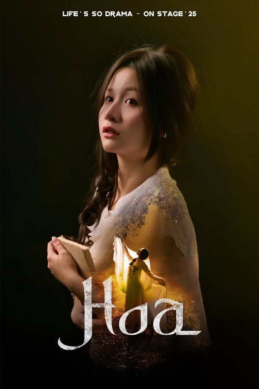

Nhân vật Hoa
- Nữ, khoảng 27 tuổi, là em gái ruột của Trọng, thông minh dịu dàng, rất thương yêu những đứa trẻ ở cô nhi viện.
- Trong quá khứ, cô cùng những đứa trẻ khác bị hội ông Châu liệt bắt đi ngay trong đêm nhưng đã được mẹ cô giải cứu và trốn thoát được. Nhưng mẹ cô đã bị hội ông Châu thủ tiêu.
- Khi quay lại được trước cửa cô nhi viện, cô được cô Diễm nhận vào cô nhi viện mà không ai hay biết về danh tính thực sự của cô.
- Chứng kiến tất cả những việc như thế, những đứa trẻ bị bắt đi không trở lại, và cả việc cô nghĩ Trọng và bố bỏ mình đi, cô đã quyết định ở lại cô nhi viện, đổi tên, lấy cho mình thân phận mới là một đứa trẻ mồ côi ở cô nhi viện.
- Sau này, cô tiếp quản cô nhi viện, tạo nên buổi lễ giải hạn định kì để cho những đứa trẻ ở cô nhi viện uống “nước thánh” để giải độc cho những nguồn nước bẩn ở nhà máy ông Châu.
- Tin rằng giữ cho nghi lễ giải hạn tồn tại là cách duy nhất để bảo vệ bọn trẻ khỏi sự tàn nhẫn và mê tín của làng. Thậm chí âm mưu đầu độc ông Châu, hãm hại Túc, đốt cháy nhà kho để sự thật không bị bại lộ.
- Trang phục: Màu đỏ